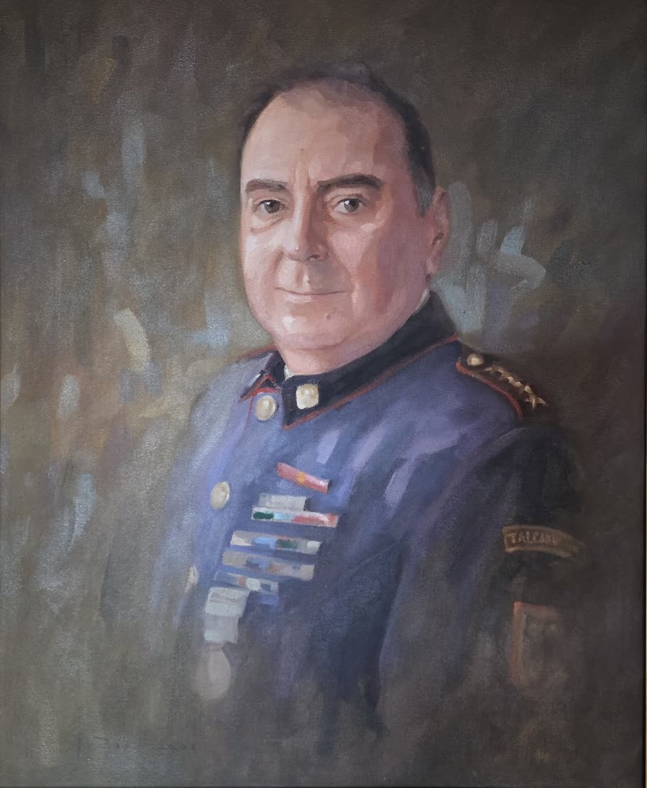

Eugenio Delpín Lepre
Fundador y primer Capitán de la Quinta (1908). Superintendente del Cuerpo de Bomberos de Talcahuano, 1928–1934

Ricardo Setz Schlegel
Fundador y primer Secretario-Tesorero de la Quinta (1908). Miembro Honorario desde el 29 de enero de 1960

Eduardo Schuyler Ziebrecht
Fundador y primer Oficial de Mar de la Quinta (1908). Superintendente del Cuerpo de Bomberos de Talcahuano, 1917–1923, y Superintendente Honorario, 1924–1938

Luis de la Cerda Schuyler
Superintendente del Cuerpo de Bomberos de Talcahuano, 1935–1979

Juan Guillermo Sosa Severino
Comandante del Cuerpo de Bomberos de Talcahuano, 1937–1968

Ariel Duffau Gálvez
Director de la Quinta hasta 2003. Lideró la construcción del cuartel de Villa Independencia (2001)
